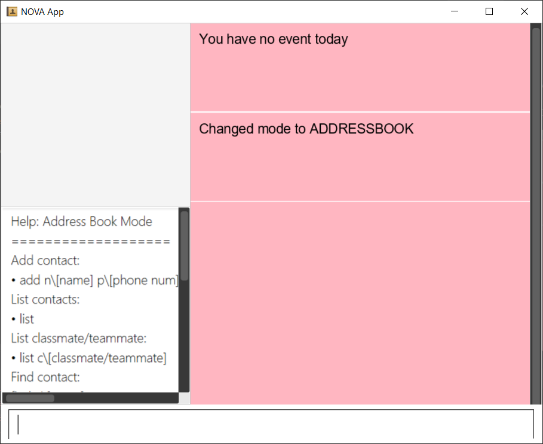

By: Team CS2103T-F10-3 Since: Apr 2020 Licence: MIT
- 1. Introduction
- 2. About
- 3. Notations
- 4. Quick Start
- 5. Features
- 5.1. Common
- 5.2. Address Book
- 5.2.1. Add Contact:
add - 5.2.2. List all Contacts:
list - 5.2.3. List Category Contact:
list - 5.2.4. Find Contact:
find - 5.2.5. Edit Contact:
edit - 5.2.6. Add Category Specific Remarks:
remark - 5.2.7. Delete Contact:
delete - 5.2.8. Clear all Contacts:
clear - 5.2.9. Undo Command:
undo - 5.2.10. Redo Command:
redo
- 5.2.1. Add Contact:
- 5.3. Schedule
- 5.3.1. Add a Meeting:
meeting - 5.3.2. Add a Study Session:
study - 5.3.3. Add a Consultation Session:
consultation - 5.3.4. Add a Lesson:
lesson - 5.3.5. Delete Event:
delete - 5.3.6. Add Notes to Event:
note - 5.3.7. View Schedule of a Day:
view - 5.3.8. View Schedule of a Week:
view - 5.3.9. Find Free Slots [v2.0]:
freeslot
- 5.3.1. Add a Meeting:
- 5.4. Daily Study Planner
- 5.5. Progress Tracker
- 6. Command Summary
- 7. FAQ
1. Introduction
Welcome to the user guide (UG) for Next-gen Organizing Virtual Assistant (NOVA).
NOVA is a one-stop desktop application for CS2103T students to manage all CS2103T related activities. Be it studying or planning project meetings, NOVA has you covered. NOVA is designed for users who prefer to interact with programs through typing.

Fig 1: Components of NOVA
2. About
This UG is a reference guide to help you use NOVA. This document contains a quick start section to get you up and running soon.
There is an entire section dedicated to how to use any particular feature in NOVA. Examples are provided for your better understanding. We have also provided a summary of commands for your quick reference. Should you face any problems, take a look at the FAQ section.
3. Notations
In this guide, you’ll be seeing the following markup being used.
| This icon indicates details that could help you better understand how to use NOVA. |
| This icon indicates actions that could negatively affect your experience while using NOVA. |
Commands and input fields are highlighted.
4. Quick Start
Here are some steps to get you started:
-
Ensure you have Java 11 or above installed in your Computer.
-
Download the latest nova.jar here.
-
Copy the file to the folder you want to use as the home folder for your NOVA.
-
Double-click the file to start the app. The GUI should appear in a few seconds.

Fig 4.1: GUI of NOVA
-
Type the command in the command box and press Enter to execute it.
-
Try the following commands to get you warmed up:
-
nav ab: navigates to address book mode.Fig 4.2: GUI of NOVA after entering
nav abYou can use the following commands once you are in address book mode:
-
list: lists all contacts -
addn\John Doe p\98765432 e\john@gmail.com c\classmate: adds a contact named John Doe to the Address Book and categorise as classmate
-
-
exit: exits the app
-
Refer to Features for details of each command.
5. Features
Features are grouped together in modes of operation. There is a set of common commands which can be used in any mode, and within every mode, there is also a set of commands for you to use and get things done.
5.1. Common
NOVA offers a set of common functionalities across all modes. These commands can be executed within any mode in NOVA.
5.1.1. Exit : exit
You can exit NOVA with this command. While exiting NOVA, contacts, schedules and notes will be saved.
Format:
exit
5.1.2. Navigation: nav
You can navigate to the desired mode to use its features.
Format:
nav [home/ab/schedule/planner/tracker]
ab refers to address book.
|
Example:
Suppose you want to use the address book,
nav ab
NOVA will change the mode to address book as seen below.
Fig 5.1.2: GUI of NOVA after entering nav schedule
5.2. Address Book
Learn how to work with the Address Book in NOVA. The address book feature allows you to keep in contact with
your teammates and classmates. Access this mode by entering the command nav ab. Your NOVA should look something
like Figure 3.2 below.
Fig 5.2: GUI of NOVA after user typed contact nav ab
5.2.1. Add Contact: add
You can add your classmate or teammate as contact.
Format: add n\[name] p\[phone number] e\[email address] c\[classmate/teammate]
|
Example:
Suppose you want to add your classmate named Jane Doe, with phone number 12345678 and email address janedoe@gmail.com
into NOVA,
add n\Jane Doe p\12345678 e\janedoe@gmail.com c\classmate
NOVA will add a new contact named Jane Doe, phone number 12345678 and email address janedoe@gmail.com into the classmate category as seen below.
5.2.2. List all Contacts: list
You can list the contact’s name, phone number and category of all contacts.
Format: list
5.2.3. List Category Contact: list
You can list the name and phone number of all the contacts under a specified category, be it classmate or teammate.
Format: list c\[classmate/teammate]
|
Example:
-
Suppose you want to view all the classmate contacts that you have added into NOVA,
list c\classmateNOVA will lists all your contacts in the
classmatecategory as seen below. -
Suppose you want to view all the teammate contacts that you have added into NOVA,
list c\teammateNOVA will lists all your contacts in the
teammatecategory as seen below.
5.2.4. Find Contact: find
You can find a contact added to the address book easily, either with the full name or just with the person’s first or the last name.
Format: find n\[name]
|
Example:
-
Suppose you want to find Jane Doe within NOVA,
find n\Jane doeNOVA will find and list saved contacts named Jane Doe.
-
Or you can find Jane Doe with just Jane,
find n\JaneNOVA will find and list saved contacts named Jane.
5.2.5. Edit Contact: edit
You can edit the contacts that you have added. If the contact you want to edit does not exist, NOVA will let you know.
At least one of the optional fields must be provided. Optional fields are n\[name], p\[phone number],
e\[email address] or c\[classmate/teammate].
Format: edit i\[index] n\[name] p\[phone number] e\[email address] c\[classmate/teammate]
|
Example:
Suppose you want to edit the first contact’s phone number in your address book after using list,
list c\[classmate/teammate] or find command,
edit i\1 p\88888888
NOVA will edit the phone number of the first contact in your list to 88888888.
5.2.6. Add Category Specific Remarks: remark
You can add remarks that are category specific, to a contact.
Format: remark i\[index] r\[remark]
|
Example:
Suppose you want add remark to the first contact in your address book after using list,
list c\[classmate/teammate] or find command,
remark i\1 r\He’s a nice teammate
NOVA will add the remark "He’s a nice teammate" to the first contact in your address book.
5.2.7. Delete Contact: delete
You can delete a contact that you have added. If the contact you try to delete does not exist, NOVA will let you know.
Format: delete i\[index]
|
Example:
Suppose you want to delete the first contact in your address book after using the list,
list c\[classmate/teammate] or find command,
delete i\1
NOVA will delete the first contact in the list.
5.2.8. Clear all Contacts: clear
You can clear all the contacts that you have added in your address book.
Format: clear
Using clear command will delete all the contacts that you have saved.
|
5.2.9. Undo Command: undo
You can undo a command that you have entered. If you cannot undo, NOVA will let you know.
Format: undo
5.2.10. Redo Command: redo
You can redo undone commands. To use redo, you must first have used undo. If you cannot redo, NOVA will let you know.
Format: redo
| After you successfully entered a command (apart from undo) after an undo command, you will lose all undone commands. |
5.3. Schedule
Learn how to work with the schedule feature in NOVA. You can track important events by adding them into the schedule
and manage them easily You need to be in schedule mode. Enter the schedule mode by entering the command nav schedule.
Your NOVA should look something like Figure 5.3 below.
Figure 5.3: GUI of NOVA after user typed nav schedule
5.3.1. Add a Meeting: meeting
You can add a meeting as one of your events. If there is already an event in the time slot, NOVA will inform you.
Format: meeting d\[description] v\[venue] t\[YYYY-MM-DD] [Start time (HH:MM)] [End time (HH:MM)]
|
The |
Example:
Suppose you wish to add a project meeting into your schedule, which is from 2pm to 3pm on 20 February 2020,
meeting d\CS2103T website set-up v\COM1 t\2020-02-20 14:00 15:00
NOVA will create an event for a team meeting at COM1 on 20 February 2020 to set up CS2103T website from 2pm to 3pm.

Fig 5.3.1: GUI of NOVA after user typed meeting d\CS2103T website set-up v\COM1 t\2020-02-20 14:00 15:00
5.3.2. Add a Study Session: study
You can add a study session as one of your events. If there is already an event in the time slot, NOVA will inform you.
Format: study d\[description] v\[venue] t\ [YYYY-MM-DD] [Start time (HH:MM)] [End time (HH:MM)]
|
The |
Example:
Suppose you wish to add a group study session from 4pm to 5pm on 20 February 2020,
study d\cool peeps revision v\COM1 t\2020-02-20 16:00 17:00
NOVA will create an event for study session at COM1 on 20 Feb 2020 from 4pm to 5pm.
Fig 5.3.2: GUI of NOVA after user typed study d\cool peeps revision v\COM1 t\2020-02-20 16:00 17:00
5.3.3. Add a Consultation Session: consultation
You can add a consultation session as one of your events. If there is already an event in the time slot, NOVA will inform you.
Format: consultation d\[description] v\[venue] t\[YYYY-MM-DD] [Start time (HH:MM)] [End time (HH:MM)]
|
The |
Example:
Suppose you wish to add a consultation session from 3pm to 4pm on 20 February 2020,
consultation d\clarify UML v\COM1 t\2020-02-20 15:00 16:00
NOVA will create an event for consultation at COM1 on 20 Feb 2020 to clarify UML from 3pm to 4pm.
Fig 5.3.3: GUI of NOVA after user typed consultation d\clarify UML v\COM1 t\2020-02-20 15:00 16:00
5.3.4. Add a Lesson: lesson
You can add a lesson as one of your events. If there is already an event in the time slot, NOVA will inform you.
Format: lesson d\[description] v\[venue] t\[day] [Start time (HH:MM)] [End time (HH:MM)]
|
The |
Example:
Suppose you wish to add a weekly lesson from 3pm to 4pm on Friday,
lesson d\CS2103T tutorial v\COM1-B103 t\Friday 15:00 16:00
NOVA will create weekly events for CS2103T tutorial at COM1-B103 on Friday from 3pm to 4pm for the entire semester.

Fig 5.3.4: GUI of NOVA after user typed lesson d\CS2103T tutorial v\COM1-B103 t\Friday 15:00 16:00
5.3.5. Delete Event: delete
You can delete an event that you no longer want. If the event does not exist, NOVA will inform you.
Format: delete t\[YYYY-MM-DD] i\[index]
[index] must be a positive integer. (E.g. 1, 2, 3, …)
|
Example:
Suppose you wish to remove the second event from the list of events on 20 February 2020,
delete t\2020-02-20 i\2
NOVA will delete the second event on 20 Feb 2020.
Fig 5.3.5: GUI of NOVA after user typed contact delete t\2020-02-20 i\2
5.3.6. Add Notes to Event: note
You can add additional notes about an event. If the event does not exist, NOVA will inform you.
Format: note d\[description] t\[YYYY-MM-DD] i\[index]
[index] must be a positive integer. (E.g. 1, 2, 3, …)
|
Example:
Suppose you wish to add a note that indicates the work allocation to a meeting event,
note d\Alice - Logic component in DG, Bob - UI component in DG t\2020-02-20 i\1
NOVA will add a note with the description "Alice - Logic component in DG, Bob - UI component in DG" to the first event on 20 Feb 2020.
Fig 5.2: GUI of NOVA after user typed note d\Alice - Logic component in DG,
Bob - UI component in DG t\2020-02-20 i\1
5.3.7. View Schedule of a Day: view
You can view the schedule of a specified day. If there is nothing to do on that day, NOVA will tell you.
Format:
view t\[YYYY-MM-DD]
Example:
Suppose you want to check out what events are happening on 29 Feb,
view t\2020-02-29
NOVA will show your schedule on 29 Feb 2020 as seen below.

Fig 5.3.7: GUI of NOVA after user typed contact view t\2020-02-29
5.3.8. View Schedule of a Week: view
You can view the schedule of a specified week. IF there is nothing to do on that week, NOVA will tell you.
Format:
view week i\[week #]
|
Example:
Suppose you are interested in what is going to happen in week 6 of the semester,
view week i\6
NOVA will show your schedule in week 6 of the semester as seen below.

Fig 5.3.8: GUI of NOVA after user typed contact view week i\6
5.3.9. Find Free Slots [v2.0]: freeslot
You can find free slots on a day easily within your schedule without looking through your schedule.
Format:
freeslot t\[YYYY-MM-DD]
Example:
Suppose you want to find pockets of free time on 29 February 2020,
freeslot t\2020-02-29
Finds the free slots on 29 Feb 2020.
5.4. Daily Study Planner
Learn how to work with the planner feature in NOVA. You can add daily/weeky tasks into your study plan and schedule it
on any day you like hassle-free. You need to be in planner mode. Enter the planner mode by entering the command
nav planner.

Fig 5.4: GUI of NOVA after user typed contact nav planner
5.4.1. Create Routine Task: routine
You can create routine tasks in your study plan. When being scheduled, the tasks will lasts for 30 minutes weekly if possible.
Format:
routine p\[task name] f\[daily/weekly] d\[event duration in minutes]
[event duration in minutes] must be between 0 and 1440
|
Example:
Suppose you want to create a weekly routine task "read cs2103 textbook",
routine p\read cs2103 textbook f\weekly d\30
NOVA will create a new task “read cs2103 textbook”.
5.4.2. Create Flexible Day-Task: flexible
You can create flexible tasks in your study plan, which will create one event per day when being scheduled. When being scheduled, these tasks will create events with duration as long as possible, from 10 minutes to 60 minutes.
Format:
flexible p\[task name] t\[total minutes] mind\[maximum event duration in minutes] maxd\[maximum event duration in minutes]
|
Example:
Suppose you want to create a flexible task "study vocabulary",
flexible p\study vocabulary f\daily mind\10 maxd\60
NOVA will create a new task “study vocabulary”
5.4.3. Delete task: delete
You can delete a task, and all its related future events.
Format:
delete p\[task name]
Example:
Suppose you want to delete the task "study vocabulary",
delete p\study vocabulary
NOVA will delete the task “study vocabulary” and all its related future events.
5.4.4. View Statistics: stats
You can view the statistics of every tasks currently in study plan. The statistics are as follows:
-
For weekly routine task, statistics consists of:
-
Number of weeks completed and incomplete since its creation
-
All the events related to the task
-
-
For daily routine task, statistics consists of:
-
Number of days done and not done since its creation
-
All the events related to the task
-
-
For flexible tasks, statistics consists of:
-
Percentage done (Total duration of every event created / Total minutes)
-
All the events related to the task
-
Format:
stats
NOVA will display the statistics of all the tasks currently in study plan.
5.4.5. Schedule Task: schedule
You can generate an event on a random spot on the specified day according to the requirements of the task if possible. The event is generated on a random slot, you will need to manually modify the event generated if you wish. If it is impossible to schedule an event for the task for that day, you will be notified.
Format:
schedule p\[task name] d\[YYYY-MM-DD]
Example:
Suppose you want to schedule the weekly routine task "read cs2103 textbook",
schedule p\read cs2103 textbook d\2020-03-20
NOVA will finds a free slot bigger than 30 minutes as specified by the task, and creates an event “read cs2103 textbook” that lasts for 30 minutes on a random spot within the free slot.
Suppose you want to schedule the flexible task "study vocabulary",
schedule p\study vocabulary d\2020-03-20
NOVA will finds a free slot bigger than 10 minutes as specified by the task, and creates an event “read cs2103 textbook” on a random spot within the free slot.
5.5. Progress Tracker
Learn how to work with the progress tracker feature in NOVA. You can track important project tasks by adding them into the progress tracker
and manage them easily. You need to be in Progress Tracker mode. Enter the Progress Tracker mode by entering the
command nav progresstracker. Your NOVA should look something like Figure 5.5 below.
Fig 5.5: GUI of NOVA after typing command nav progresstracker
5.5.1. Add Project Task: add
You can add tasks under projects in the progress tracker.
Format:
add p\[ip/tp] w\[week number] d\[task description]
|
Example:
Suppose you want to add a task to week 3 of IP project to remind yourself to do up javaFx,
Add p\ip w\3 d\Do up javaFx
NOVA will add a task “Do up javaFx” to week 3 of IP in progress tracker.
5.5.2. View Project Task: list
You can view tasks under a certain week for projects in the progress tracker.
Format:
list p\[ip/tp] w\[week number]
|
Example:
Suppose you would like to view the tasks you have added to week 3 of IP project,
list p\ip w\3
NOVA will list the tasks in week 3 of IP project.
5.5.3. Delete Project Task: delete
You can remove tasks under projects in the progress tracker.
Format: delete p\[ip/tp] w\[week number] t\[task number]
|
Example:
Suppose you wish to delete task number 3 in week 3 of IP project,
delete p\ip w\3 t\3
NOVA will delete task 3 in week 3 of IP in progress tracker.
5.5.4. Complete Tasks: done
You can mark tasks in the progress tracker as done.
Format:
done p\[ip/tp] w\[week number] t\[task number]
|
Example:
Suppose you wish to set task number 2 in week 3 of IP project as done or undone,
done p\ip w\3 t\2
NOVA will set task 2 in week 3 of IP in progress tracker as done/undone depending on it’s status originally.
5.5.5. Add Notes: addNote
You can add notes to project tasks in the progress tracker.
Format:
addNote p\[ip/tp] w\[week number] t\[task number] d\[note]
|
Example:
Suppose you wish to add a note to remind yourself to create a branch and tag for task number 2 in week 3 of IP project,
addNote p\ip w\3 t\2 d\Need create branch and tag
NOVA will add a note “Need create branch and tag” to task 2 in week 3 of IP.
5.5.6. Edit Note: editNote
You can edit the note that you have added to tasks in projects in the progress tracker.
Format:
editNote p\[ip/tp] w\[week number] t\[task number] d\[new note]
|
Example:
Suppose you wish to edit the note added in task 2 of week 3 in IP project,
editNote p\[ip] w\3 t\2 d\consult tutor
NOVA will edit the note under task 2 of week 3 of IP.
5.5.7. Delete Note: deleteNote
You can delete the note that you have added to tasks in projects in the progress tracker.
Format:
deleteNote p\[ip/tp] w\[week number] t\[task number] i\[note number]
|
Example:
Suppose you wish to delete the note added in task 2 of week 3 in IP project,
deleteNote p\[ip] w\3 t\2 i\2
NOVA will delete the note under task 2 of week 3 of IP.
6. Command Summary
| Mode | Command | Description |
|---|---|---|
Common |
exit |
Exits NOVA |
nav [home/ ab/ schedule/ planner/ tracker] |
Changes the mode of NOVA |
|
Address Book |
add n\[name] p\[phone number] e\[email address] c\[classmate/teammate] |
Adds a contact into your address book |
clear |
Deletes all contacts within your address book |
|
delete i\[index] |
Deletes the contact at the specified index |
|
edit i\[index] n\[name] p\[phone number] e\[email address] c\[classmate/teammate] |
Edits the contact at the specified index to the specified fields |
|
find n\[name] |
Finds a contact in your address book |
|
list |
Lists all the contacts in your address book |
|
list c\[classmate/teammate] |
Lists all the contacts of the specified category in your address book |
|
redo |
Redoes an undone command |
|
remark i\[index] r\[remark] |
Adds a category specific remark to the contact at the specified index |
|
undo |
Undoes a command |
|
Schedule |
consultation d\[description] v\[venue] t\[YYYY-MM-DD] [Start time (HH:MM)] [End time (HH:MM)] |
Adds a consultation event to your schedule |
delete t\[YYYY-MM-DD] i\[index] |
Deletes the event at the specified index on the specified day |
|
freeslot t\[YYYY-MM-DD] [v2.0] |
Find pockets of free time you have on the specified day |
|
lesson d\[description] v\[venue] t\[day] [Start time (HH:MM)] [End time (HH:MM)] |
Adds a lesson to your schedule |
|
meeting d\[description] v\[venue] t\[YYYY-MM-DD] [Start time (HH:MM)] [End time (HH:MM)] |
Adds a meeting event to your schedule |
|
note d\[description] t\[YYYY-MM-DD] i\[index] |
Adds a note to the event at the specified index of the specified date |
|
study d\[description] v\[venue] t\[YYYY-MM-DD] [Start time (HH:MM)] [End time (HH:MM)] |
Adds a study session event into your schedule |
|
view t\[YYYY-MM-DD] |
Shows the events happening on the specified date |
|
view week i\[week #] |
Shows the events happening on the specified week |
|
Daily Study Planner |
delete p\[task name] |
Deletes a task and all its events |
flexible |
Creates a flexible task |
|
routine p\[task name] f\[daily/weekly] d\[event duration in minutes] |
Creates a routine task |
|
schedule |
Schedules a tasks in the schedule |
|
stats |
Views the statistics of your planner |
|
Progress Tracker |
add p\[ip/tp] w\[week number] d\[task description] |
Adds a task to the specified week and project |
list p\[ip/tp] w\[week number] |
Lists the tasks that have been added to the specified week and project |
|
delete p\ip w\3 t\3 |
Deletes the specified task |
|
done p\[ip/tp] w\[week number] t\[task number] |
Sets the status of the specified task to done/undone |
|
addNote p\[ip/tp] w\[week number] t\[task number] d\note |
Adds a note to the specified task |
|
editNote p\[ip/tp] w\[week number] t\[task number] d\[new note] |
Overwrites the existing note with the new note |
|
deleteNote p\[ip/tp] w\[week number] t\[task number] |
Deletes the note in the specified task |
7. FAQ
Q: How do I transfer my data to another Computer?
A: You can install the app on the other computer and overwrite the empty data file it creates with the file that
contains the data of your previous NOVA folder.